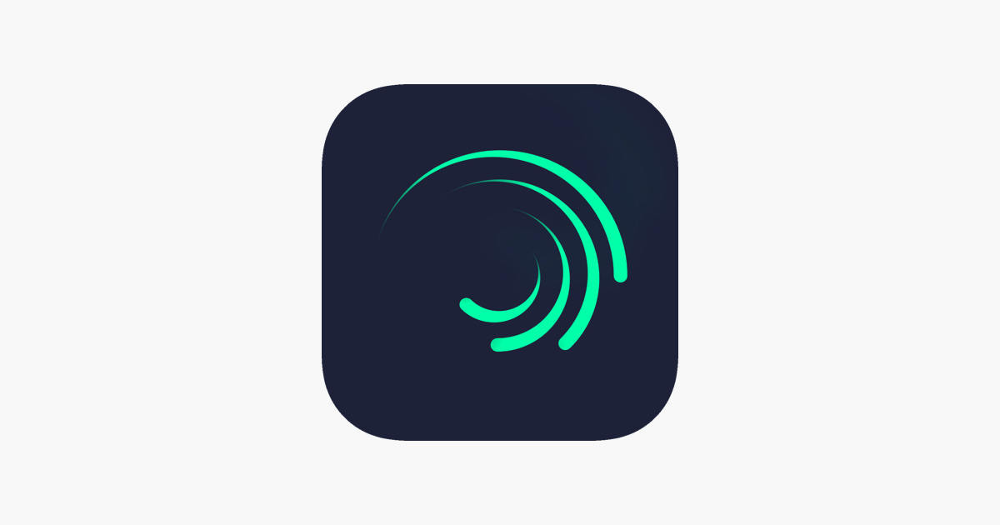
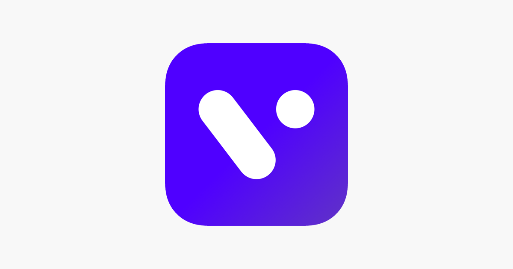

Video Editing Application
InShot makes it easy to change the video shape for different Social Media without having to re-edit (something which can be an issue with other editors). ... Editing in InShot. Change InShot has controls to trim video clips, change the speed and mirror the image, among others
Alight Motion, is the first pro motion graphics app for your smartphone, bringing you professional-quality animation, motion graphics, visual effects, video editing, and video compositing. ... Alight Motion requires at least 1.5GB of RAM to be installed and run effectively. This is a new application.
Easily Move Between Lightroom, Photoshop & Photoshop On iPad To Perfect Your Photos. Take Your Photos To The Next Level With New Features & Tutorials For All Levels. Join! Special offers. Step-by-step tutorials. No internet access needed. Sync, store and share

VITA is a revolutionary mobile social app that uses crowdsourcing, geolocation and artificial intelligence technology to allow anyone to easily find and view what's happening at any place around them or across the globe. ... VITA is at the forefront of this technology.
